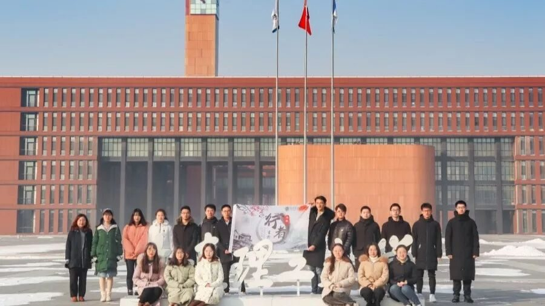
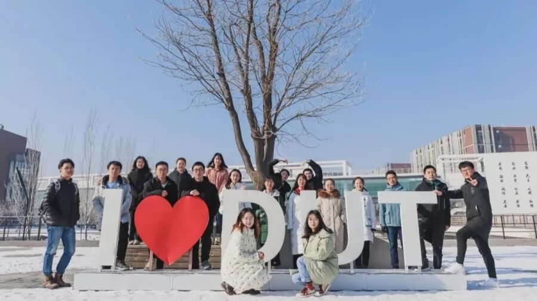

【行者无疆 言念潇湘】启程篇

行者无疆·言念潇湘
不畏将来，不念过往，秉持心气，何惧远方！
行者无疆
是怎样的一场白雪飞舞，让流水光阴也这般灿烂从容。都说韶光如梦，纵使看惯了秋月春风，也无比庆幸这一段美丽的相逢。来自天南海北的我们，此刻即将启程，不负期盼，共赴潇湘。
我们用脚步丈量世界
我们用真心感悟文化
我们满怀期待

身未动，心已行，行者将踏上一段新的旅途，去探索未知的世界，去期待翩然而至的喜悦。你听，那是列车的阵阵鸣笛声。
图片 | 陈辉
文字 | 王姿然
排版 | 张清雅
审核 | 段智然 康艳虎
行者无疆实践团
QQ：2758025831

随行者一起认识世界
长按二维码